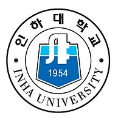
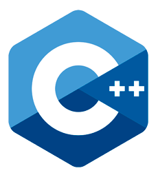
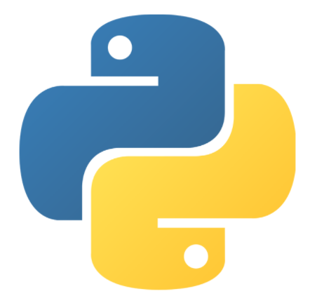
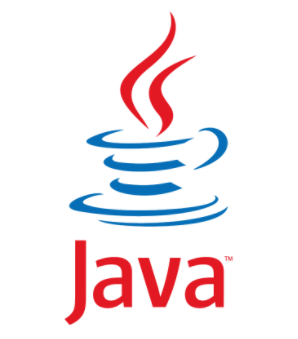
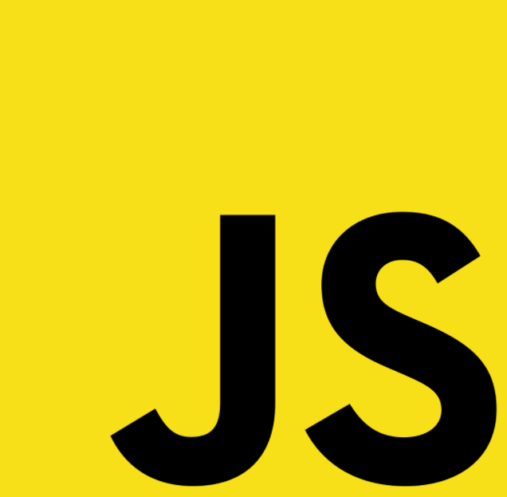

산업공학이란 모든 체계를 조화롭게 관리하는 역할을 담당하는 공학. 주로 산업 및 사람과 관련된 모든 시스템과 인터페이스에 대하여 연구하며, 시스템과 인터페이스의 최적화와 효율성 극대화에 초점을 맞추는 것을 목표로 하는 학문입니다.
기업에는 경영자와 기술자가 존재합니다. 경영자는 경영에 집중하고, 기술자는 기업의 기술에 집중하기 때문에 경영자는 기술을 모르고, 기술자는 경영을 잘 몰라 서로 간의 갈등이 발생합니다. 경영과 기술을 공부한 산업공학자는 이 둘 간의 갈등을 중재 해주는 역할을 할 수 있어 기업의 리더의 역할을 할 수 있습니다.
때는 자유학기제가 시행되던 중학교 2학년 때입니다. 이 때 저의 진로에 대해서 진지하게 고민해보았고, 저희 아버지께서 산업공학과 교수님이셨기 때문에 자연스럽게 산업공학에 대해 생각해보기 시작하였습니다.
딱히 하고 싶은 것도 없었고, 좋아하는 것도 없었던 시절인 고등학교 2학년. 저는 이전에 관심을 가졌었던 산업공학과에 다시 관심을 가지게 되었고, 어떤 것들을 배우는지 찾아보기 시작했습니다. 여러 자료들과 영상들을 본 결과, 산업공학과의 가장 주된 키워드는 '최적화'였습니다. 여러 가지 경우의 수들 중 가장 최적의 답을 선택하는 산업공학은 저에게 매력적으로 다가왔습니다. 뿐만 아니라 하나를 깊게 파고드는 것이 아닌, 다양한 분야들을 얕게 배운다는 산업공학의 특징은 저의 성격과도 잘 맞았습니다.

학창시절 동안 산업공학과에 맞춰 공부를 하였고 2019년에 인하대학교 산업경영공학과에 입학하게 되었습니다.
대학교 1학년 때 무심코 프로그래밍 수업을 듣게 되었고, 이를 계기로 코딩에 관심을 갖게 되었습니다. 프로그래밍을 배우기 전에는 추상적인 생각을 하는 것을 즐겨하였고, 그 과정에서 인과관계는 그리 중요하지 않았습니다. 하지만 프로그래밍은 그냥 넘어가는 것이 허용되지 않습니다. 코드 한줄 한줄이 인과관계가 맞아야 하며, 논리적이어야 프로그램이 돌아갑니다. 저는 이러한 과정 자체가 너무 재미있습니다. 막연한 생각들을 프로그래밍으로 구체화하는 것들이 즐거울 뿐만 아니라 점점 생각을 논리적으로 하게 되는 저의 모습이 너무나 신기하기 때문에 프로그래밍에 매력을 느끼게 되었습니다.




프로그래밍 수업때 배운 C언어를 시작을 하여, 웹프로그래밍에 관심을 갖게 되었고 여러가지 프로그램들을 구현하면서 IT에 관심을 갖게 되었습니다.
IT분야에서도 요즘 인기가 많은 인공지능, 딥러닝에 관심을 갖게 되었습니다. "Deep Learning with Python"이라는 책을 통해 책을 읽고, 코드를 한줄한줄 따라치고, 모르는 부분은 유튜브 동영상을 찾아보면서 딥러닝에 대해서 공부하였고, 보다 더 깊게 공부하고 싶어 정보공학연구실 학부연구생으로 들어가 본격적으로 딥러닝을 공부하기 시작했습니다. 지금은 Trajectory Classification 분야를 집중적으로 공부하고 있으며 Natural Language Processing(NLP)분야 뿐만 아니라 Computer Vision 분야도 공부하면서 매일매일 딥러닝을 공부하고 있습니다.
산업공학의 궁극적인 목적은 "최적화"이며, IT는 이 최적화를 달성하기 위한 수단입니다. 제가 현재 재미있게 공부하고 있는 딥러닝 분야도 역시 산업공학에서는 최적화를 달성하기 위한 수단입니다. 현재 저는 산업공학 내 최적화를 적용시킬 도메인 영역을 찾기 위해 공부하고 있습니다. 금융, HCI 등등 다양한 산업공학과 내의 과목들을 수강하면서 제가 공부하고 싶은 분야를 찾기 위해 노력하고 있습니다.